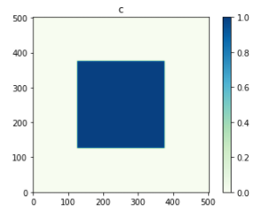
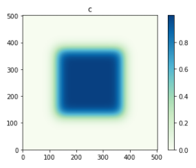

How to use pyphasefield: Creating your own Engine
While the engines included with pyphasefield can be useful, it is very likely that the average user may want to run their own
custom phase field model. To enable this, a Template engine file is shown here, which may be modified quite freely. This
template file may be downloaded here.
The Code
try:
#import from within Engines folder
from ..field import Field
from ..simulation import Simulation
from ..ppf_utils import COLORMAP_OTHER, COLORMAP_PHASE
except:
try:
#import classes from pyphasefield library
from pyphasefield.field import Field
from pyphasefield.simulation import Simulation
from pyphasefield.ppf_utils import COLORMAP_OTHER, COLORMAP_PHASE
except:
raise ImportError("Cannot import from pyphasefield library!")
class Template(Simulation):
def __init__(self, **kwargs):
super().__init__(**kwargs)
#additional initialization code goes below
#runs *before* tdb, thermal, fields, and boundary conditions are loaded/initialized
def init_tdb_params(self):
super().init_tdb_params()
#additional tdb-related code goes below
#runs *after* tdb file is loaded, tdb_phases and tdb_components are initialized
#runs *before* thermal, fields, and boundary conditions are loaded/initialized
def init_fields(self):
#initialization of fields code goes here
#runs *after* tdb and thermal data is loaded/initialized
#runs *before* boundary conditions are initialized
pass
def initialize_fields_and_imported_data(self):
super().initialize_fields_and_imported_data()
#initialization of fields/imported data goes below
#runs *after* tdb, thermal, fields, and boundary conditions are loaded/initialized
def just_before_simulating(self):
super().just_before_simulating()
#additional code to run just before beginning the simulation goes below
#runs immediately before simulating, no manual changes permitted to changes implemented here
def simulation_loop(self):
#code to run each simulation step goes here
pass
Creating MyDiffusionClass from the Template
In order to create an engine, the first piece is to add code to the simulation loop to define what the engine actually does. Let us use a 2D diffusion equation to drive this engine. This will essentially recreate part of the included Diffusion engine that comes with pyphasefield. The diffusion equation in 2D is given as the following:
\(\frac{dc}{dt} = D\nabla ^2 c = D(\frac{d^2c}{dx^2} + \frac{d^2c}{dy^2})\).
In discretized form, using finite difference expressions for each of these terms, we get:
\(\frac{t-t_0}{\Delta t} = D\frac{c_{x+1, y}+c_{x-1, y}+c_{x, y+1}+c_{x, y-1}-4*c_{x, y}}{\Delta x^2}\).
\(t = t_0 + D\Delta t\frac{c_{x+1, y}+c_{x-1, y}+c_{x, y+1}+c_{x, y-1}-4*c_{x, y}}{\Delta x^2}\).
In our code, we can write these offset terms using the built-in numpy function numpy.roll, which offsets an array along a particular axis by a given amount. In this simulation, c will be our only field (sim.fields[0]). We will also include D as a user_data parameter in pyphasefield. Ultimately, this code looks like this:
import numpy as np
...
class Template(Simulation):
...
def simulation_loop(self):
#code to run each simulation step goes here
c = self.fields[0].data
D = self.user_data["D"]
dx = self.dx
dt = self.dt
#define offset arrays, remember the sign of roll is opposite the direction of the cell of interest
#also, x is dimension 1, y is dimension 0 (C style arrays...)
c_p0 = np.roll(c, -1, 1) #x+1, y.
c_m0 = np.roll(c, 1, 1) #x-1, y.
c_0p = np.roll(c, -1, 0) #x, y+1.
c_0m = np.roll(c, 1, 0) #x, y-1.
#apply change from a single step
c += D*dt*(c_p0 + c_m0 + c_0p + c_0m - 4*c)/(dx**2)
We also can define what the default field is for c, as well as specify a default value for D if the user did not specify one. This isn’t required, but doesn’t hurt:
import numpy as np
...
class Template(Simulation):
...
def init_fields(self):
#initialization of fields code goes here
#runs *after* tdb and thermal data is loaded/initialized
#runs *before* boundary conditions are initialized
if not ("D" in self.user_data):
self.user_data["D"] = 0.1
dim = self.dimensions
c = np.zeros(dim)
length = dim[0]
width = dim[1]
c[length // 4:3 * length // 4, width // 4:3 * width // 4] = 1
self.add_field(c, "c")
Altogether, the code looks like this for MyDiffusionClass.py
import numpy as np
try:
#import from within Engines folder
from ..field import Field
from ..simulation import Simulation
from ..ppf_utils import COLORMAP_OTHER, COLORMAP_PHASE
except:
try:
#import classes from pyphasefield library
from pyphasefield.field import Field
from pyphasefield.simulation import Simulation
from pyphasefield.ppf_utils import COLORMAP_OTHER, COLORMAP_PHASE
except:
raise ImportError("Cannot import from pyphasefield library!")
class Template(Simulation):
def __init__(self, **kwargs):
super().__init__(**kwargs)
#additional initialization code goes below
#runs *before* tdb, thermal, fields, and boundary conditions are loaded/initialized
def init_tdb_params(self):
super().init_tdb_params()
#additional tdb-related code goes below
#runs *after* tdb file is loaded, tdb_phases and tdb_components are initialized
#runs *before* thermal, fields, and boundary conditions are loaded/initialized
def init_fields(self):
#initialization of fields code goes here
#runs *after* tdb and thermal data is loaded/initialized
#runs *before* boundary conditions are initialized
if not ("D" in self.user_data):
self.user_data["D"] = 0.1
dim = self.dimensions
c = np.zeros(dim)
length = dim[0]
width = dim[1]
c[length // 4:3 * length // 4, width // 4:3 * width // 4] = 1
self.add_field(c, "c")
def initialize_fields_and_imported_data(self):
super().initialize_fields_and_imported_data()
#initialization of fields/imported data goes below
#runs *after* tdb, thermal, fields, and boundary conditions are loaded/initialized
def just_before_simulating(self):
super().just_before_simulating()
#additional code to run just before beginning the simulation goes below
#runs immediately before simulating, no manual changes permitted to changes implemented here
def simulation_loop(self):
#code to run each simulation step goes here
c = self.fields[0].data
D = self.user_data["D"]
dx = self.dx
dt = self.dt
#define offset arrays, remember the sign of roll is opposite the direction of the cell of interest
#also, x is dimension 1, y is dimension 0 (C style arrays...)
c_p0 = np.roll(c, -1, 1) #x+1, y.
c_m0 = np.roll(c, 1, 1) #x-1, y.
c_0p = np.roll(c, -1, 0) #x, y+1.
c_0m = np.roll(c, 1, 0) #x, y-1.
#apply change from a single step
c += D*dt*(c_p0 + c_m0 + c_0p + c_0m - 4*c)/(dx**2)
Now, if we use a slightly edited script from the diffusion example:
#built for pyphasefield version 1.1.0, may not work on future versions!
from MyDiffusionClass import MyDiffusionClass
sim = MyDiffusionClass(dimensions=[500, 500])
#initialize non-array parameters
sim.set_framework("CPU_SERIAL") #"CPU_SERIAL" (GPU_SERIAL not coded for MyDiffusionClass yet!)
sim.set_dx(1.)
sim.set_dt(0.1)
sim.set_save_path("data/diffusion_test")
sim.set_autosave_flag(True)
sim.set_autosave_save_images_flag(True)
sim.set_autosave_rate(2000)
sim.set_boundary_conditions("PERIODIC")
data = {
"D":1.
}
sim.set_user_data(data)
#initialize simulation arrays, all parameter changes should be BEFORE this point!
sim.initialize_fields_and_imported_data()
#change array data here, for custom simulations
"""
sim.fields[0].data[:] = 1.
length = sim.dimensions[0]
width = sim.dimensions[1]
sim.fields[0].data[length // 4:3 * length // 4, width // 4:3 * width // 4] = 0.
"""
#initial conditions
sim.plot_simulation()
#run simulation
sim.simulate(2000)
#final conditions
sim.plot_simulation()
We obtain the same results as the built-in diffusion class!
 